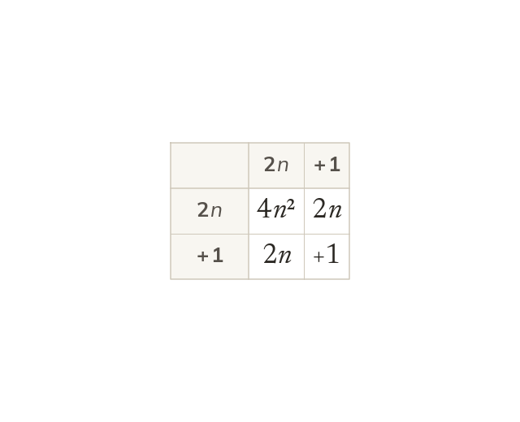
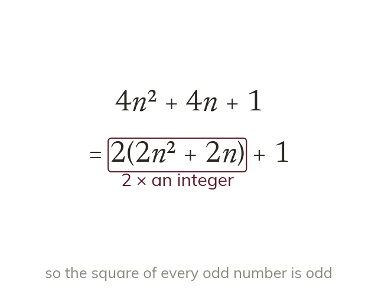
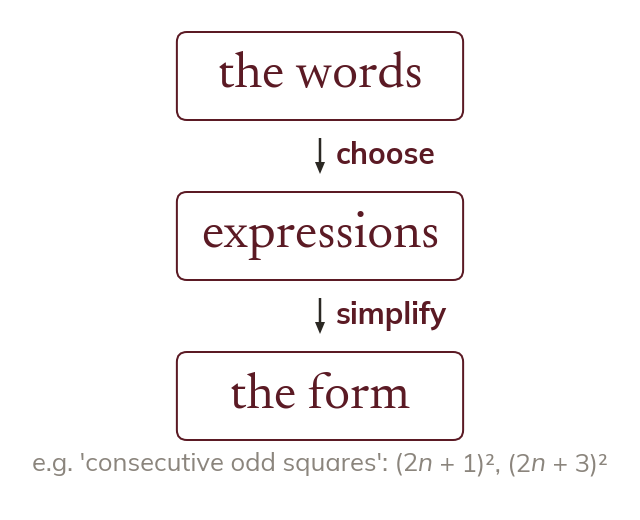
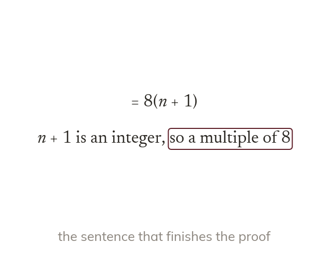

Squaring keeps the middle term
Squaring an expression expands the whole bracket. An odd number squared is
Squaring an algebraic integer means expanding the whole bracket. The square of an odd number is middle term and all.
The hardest proofs on the paper involve squares, and they are worth the most marks. Today: expanding squares of integers in full, and choosing the form that shows a result is odd, even or a multiple.
Work down the page at your own pace. Write every answer in your book first, then click to check it.
Read each card, then follow the worked examples one step at a time.

Squaring an expression expands the whole bracket. An odd number squared is

Odd means × an integer +
So is written as
Pick an answer. If it's wrong, the feedback tells you which mistake it was.
Read each card, then follow the worked examples one step at a time.

A worded statement becomes algebra before anything is proved. Each phrase, like 'consecutive' or 'odd', picks the expression.

A proof ends with a sentence linking the form to the statement. Without it, the argument is unfinished.
Pick an answer. If it's wrong, the feedback tells you which mistake it was.
Finished? Next lesson: 11H.6.1 Polygons and Exterior Angles.
Log in, then search for a code to practise that skill.
Videos, worksheets and more on each part of this lesson.